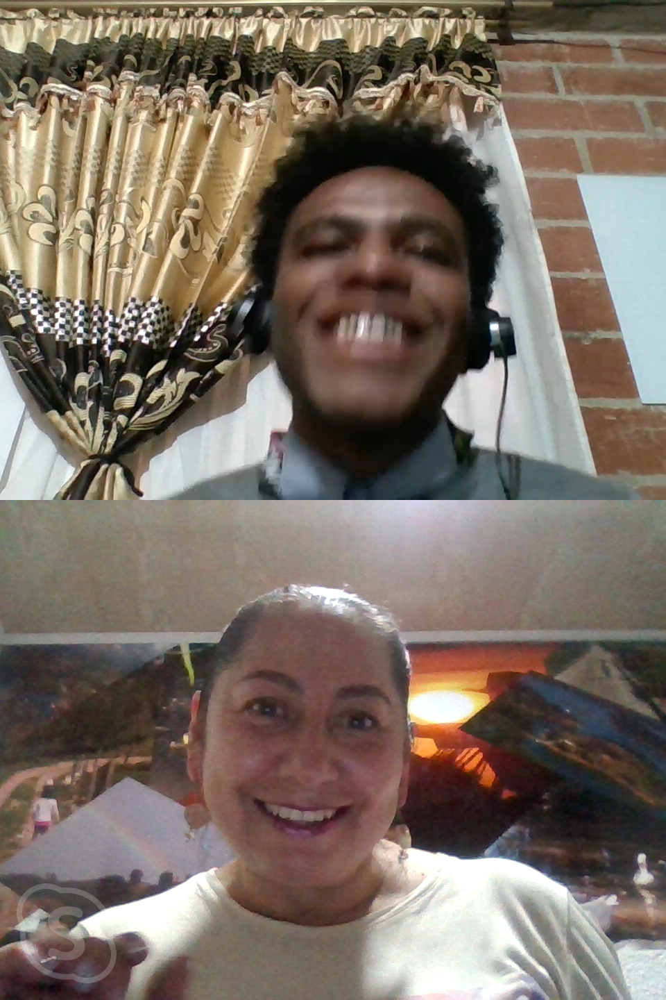

Audio
Meet
Autoevaluación
Mi autoevaluacion para este trabajo es de 7 debido a que no logre participar en el foro muy seguido pero estuve estudiando los modulos y practicando mis communication skills,. Durante la entrevista me senti un poco inseguro con el speaking pero logre cumplir con el objetivo, no me sentia inseguro de estar ahi ya que algunas veces e tenido pequeñas conversaciones donde e ido aprendiendo ciertas cosas como gramatica y el listening, me gusto la experiencia es algo del aprendizaje y muy dinamica la actividad y esto hace que siga avanzando para lograr un buen nivel de ingles.